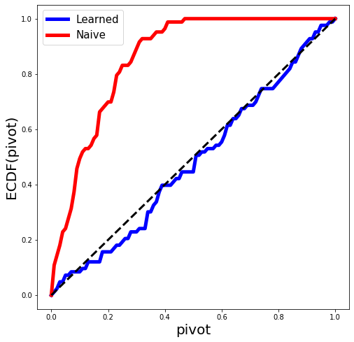

Learning selection with in the simple example¶
Here we run a simple linear regression model (even without intercept) and make a selection when the \(Z\) score is larger than 2.
[1]:
import functools
import numpy as np; np.random.seed(0)
from scipy.stats import norm as ndist
import statsmodels.api as sm
import matplotlib.pyplot as plt
%matplotlib inline
import pandas as pd
from selectinf.tests.instance import gaussian_instance
from selectinf.learning.utils import full_model_inference, pivot_plot
from selectinf.learning.core import normal_sampler
from selectinf.learning.Rfitters import logit_fit
def simulate(n=20, p=1, s=1, signal=1, sigma=2, alpha=0.1, B=2000):
# description of statistical problem
X, y, truth = gaussian_instance(n=n,
p=p,
s=s,
equicorrelated=False,
rho=0.5,
sigma=sigma,
signal=signal,
random_signs=True,
scale=False)[:3]
dispersion = sigma**2
S = X.T.dot(y)
covS = dispersion * X.T.dot(X)
sampler = normal_sampler(S, covS)
def base_algorithm(X, dispersion, sampler):
success = np.zeros(p)
scale = 0.
noisy_S = sampler(scale=scale)
Z = noisy_S / np.sqrt(np.linalg.norm(X)**2 * dispersion)
if Z > 2:
return set([0])
else:
return set([])
selection_algorithm = functools.partial(base_algorithm, X, dispersion)
# run selection algorithm
return full_model_inference(X,
y,
truth,
selection_algorithm,
sampler,
B=B,
fit_probability=logit_fit,
fit_args={'df':20},
how_many=1)
/Users/jonathantaylor/anaconda/envs/py36/lib/python3.6/site-packages/sklearn/ensemble/weight_boosting.py:29: DeprecationWarning: numpy.core.umath_tests is an internal NumPy module and should not be imported. It will be removed in a future NumPy release.
from numpy.core.umath_tests import inner1d
Using TensorFlow backend.
/Users/jonathantaylor/anaconda/envs/py36/lib/python3.6/site-packages/tensorflow/python/framework/dtypes.py:455: FutureWarning: Passing (type, 1) or '1type' as a synonym of type is deprecated; in a future version of numpy, it will be understood as (type, (1,)) / '(1,)type'.
_np_qint8 = np.dtype([("qint8", np.int8, 1)])
/Users/jonathantaylor/anaconda/envs/py36/lib/python3.6/site-packages/tensorflow/python/framework/dtypes.py:456: FutureWarning: Passing (type, 1) or '1type' as a synonym of type is deprecated; in a future version of numpy, it will be understood as (type, (1,)) / '(1,)type'.
_np_quint8 = np.dtype([("quint8", np.uint8, 1)])
/Users/jonathantaylor/anaconda/envs/py36/lib/python3.6/site-packages/tensorflow/python/framework/dtypes.py:457: FutureWarning: Passing (type, 1) or '1type' as a synonym of type is deprecated; in a future version of numpy, it will be understood as (type, (1,)) / '(1,)type'.
_np_qint16 = np.dtype([("qint16", np.int16, 1)])
/Users/jonathantaylor/anaconda/envs/py36/lib/python3.6/site-packages/tensorflow/python/framework/dtypes.py:458: FutureWarning: Passing (type, 1) or '1type' as a synonym of type is deprecated; in a future version of numpy, it will be understood as (type, (1,)) / '(1,)type'.
_np_quint16 = np.dtype([("quint16", np.uint16, 1)])
/Users/jonathantaylor/anaconda/envs/py36/lib/python3.6/site-packages/tensorflow/python/framework/dtypes.py:459: FutureWarning: Passing (type, 1) or '1type' as a synonym of type is deprecated; in a future version of numpy, it will be understood as (type, (1,)) / '(1,)type'.
_np_qint32 = np.dtype([("qint32", np.int32, 1)])
/Users/jonathantaylor/anaconda/envs/py36/lib/python3.6/site-packages/tensorflow/python/framework/dtypes.py:462: FutureWarning: Passing (type, 1) or '1type' as a synonym of type is deprecated; in a future version of numpy, it will be understood as (type, (1,)) / '(1,)type'.
np_resource = np.dtype([("resource", np.ubyte, 1)])
R[write to console]: Loaded gbm 2.1.5
R[write to console]: randomForest 4.6-14
R[write to console]: Type rfNews() to see new features/changes/bug fixes.
[2]:
dfs = []
for i in range(1000):
df = simulate()
if df is not None:
dfs.append(df)
/Users/jonathantaylor/git-repos/selectinf/selectinf/distributions/discrete_family.py:86: RuntimeWarning: divide by zero encountered in log
self._lw = np.array([np.log(v) for v in xw[:,1]])
[3]:
fig = plt.figure(figsize=(8, 8))
results = pd.concat(dfs)
pivot_plot(results, fig=fig);
